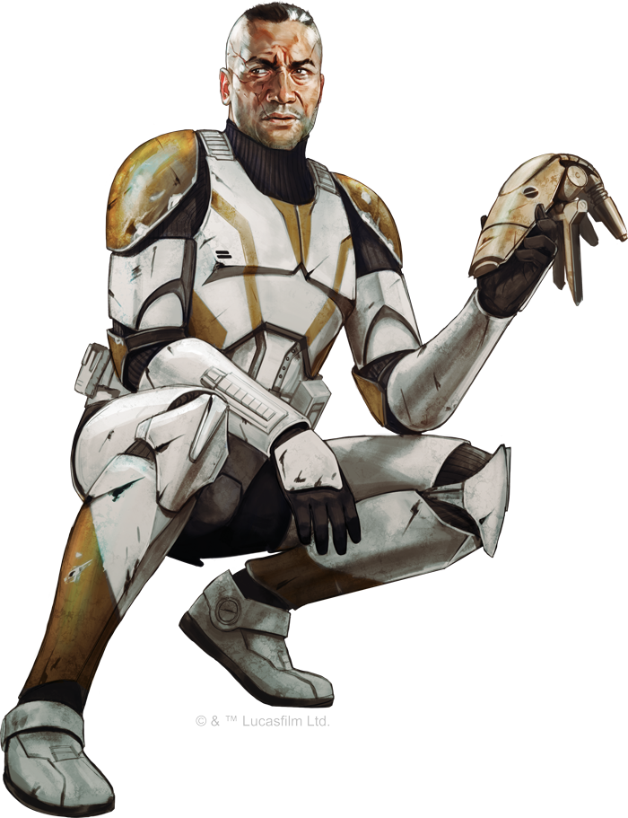

<!DOCTYPE html>
<html>

<head>
  <title>Human (Clone)</title>

  <meta charset="utf-8">
  <meta name="viewport" content="width=device-width, initial-scale=1, shrink-to-fit=no">

  <link rel="stylesheet" href="https://stackpath.bootstrapcdn.com/bootstrap/4.1.3/css/bootstrap.min.css"
    integrity="sha384-MCw98/SFnGE8fJT3GXwEOngsV7Zt27NXFoaoApmYm81iuXoPkFOJwJ8ERdknLPMO" crossorigin="anonymous">
  <link rel="stylesheet" href="https://pro.fontawesome.com/releases/v5.5.0/css/all.css"
    integrity="sha384-j8y0ITrvFafF4EkV1mPW0BKm6dp3c+J9Fky22Man50Ofxo2wNe5pT1oZejDH9/Dt" crossorigin="anonymous">
  <link rel="stylesheet" type="text/css" href="style.css">
</head>

<body>

  <div class="text-uppercase">
    <nav aria-label="breadcrumb" class="breadcrumb-bar fixed-top">
      <ol class="breadcrumb">
        <a class="navbar-brand" href="../index.html">
          <span class="nav-logo">Star Wars Tabletop Compendium</span>
        </a>
        <div class="row breadcrumb-whole">
          <li class="breadcrumb-item"><a class="" href="../index.html">Home</a></li>
          <li class="breadcrumb-item"><a class="" href="species_index.html">Species</a></li>
          <li class="breadcrumb-item active">Clone Trooper (Late War)</li>
        </div>
      </ol>
    </nav>
  </div>

  <br>
  <div class="Container" id="main_box">

    <a href="species_index.html"><button type="button" class="btn btn-outline-dark" id="back_button">&#9668;
        Back</button></a>

    <h1>Human (Clone)</h1>
    <h5 class="aurebesh_under">human clone</h5>

    
    <br>
    <div class="row justify-content-md-center">
      <a href="species_human_clone.html"><button type="button" class="btn btn-outline-dark">Early Clone Wars</button></a>
      <button type="button" class="btn btn-outline-dark" disabled>Late Clone Wars</button>
    </div>
    <br>

    <div class="container col-8">

      <div class="card">
        <div class="card-header" id="headingOne">
          <h5 class="mb-0">
            <button class="btn btn-link btn-block" type="button" data-toggle="collapse" data-target="#collapseZero"
              aria-expanded="false" aria-controls="collapseZero"
              style="color: white; text-decoration: none; text-align: left">
              Stats
            </button>
          </h5>
        </div>
        <div id="collapseZero" class="collapse" aria-labelledby="headingZero">
          <div class="card-body">
            <div class="row justify-content-md-center">
              <div class="col col-lg-2 align" align="center">
                <strong>Bra</strong>
              </div>
              <div class="col col-lg-2" align="center">
                <strong>Agi</strong>
              </div>
              <div class="col col-lg-2" align="center">
                <strong>Int</strong>
              </div>
              <div class="col col-lg-2" align="center">
                <strong>Cun</strong>
              </div>
              <div class="col col-lg-2" align="center">
                <strong>Will</strong>
              </div>
              <div class="col col-lg-2" align="center">
                <strong>Pre</strong>
              </div>
            </div>
            <div class="row justify-content-md-center">
              <div class="col col-lg-2" align="center">
                2
              </div>
              <div class="col col-lg-2" align="center">
                2
              </div>
              <div class="col col-lg-2" align="center">
                2
              </div>
              <div class="col col-lg-2" align="center">
                2
              </div>
              <div class="col col-lg-2" align="center">
                2
              </div>
              <div class="col col-lg-2" align="center">
                2
              </div>
            </div>
            <br>
            <div class="row justify-content-md-center">
              <div class="col col-lg-6">
                <b>Wound Threshold: </b>11 + Brawn
              </div>
            </div>
            <div class="row justify-content-md-center">
              <div class="col col-lg-6">
                <b>Strain Threshold: </b>11 + Willpower
              </div>
            </div>
            <div class="row justify-content-md-center">
              <div class="col col-lg-6">
                <b>Starting Experience: </b>100 XP
              </div>
            </div>
            <div class="row justify-content-md-center">
              <div class="col col-lg-6">
                <p><b>Special Abilities: </b>Clones start the game with
                  one rank in <u>Knowledge (Warfare)</u> and one rank
                  in <u>Resilience</u>. They still may not train these skills
                  above rank 2 during character creation.
                </p>
              </div>
            </div>
            <div class="row justify-content-md-center">
              <div class="col col-lg-6">
                <p><b>Kamino Training: </b>Clones start with one rank in
                  the Physical Training talent</p>
              </div>
            </div>
          </div>
        </div>
      </div>

    </div>
    <br>
    <p>As the Clone Wars drag on, the stress of combat and
      the high casualties cause cracks and strains in the
      ranks of the <b>clone</b> soldiers. Personality quirks, once
      considered harmless or even essential to the mental
      development of these soldiers, now express themselves 
      in extreme and polarizing ways.</p>
    <p>Naive new clones, fresh from the clone tanks, find
      themselves fighting alongside veterans who have
      experienced years of combat, the deaths of comrades,
      objectives gained or failed, and the often-ineffectual
      civilian Republic leadership. Some veterans have
      developed a skepticism of Republic bureaucracy that
      shocks even the most cynical of rookie clones.</p>
    <p>Though the vast majority of clones remain loyal to
      the Republic, a small number have begun to question
      their strict obedience. Unlike most “natural” species,
      in which the youth question their elders, it is the older
      clones of the Grand Army of the Republic who find
      themselves questioning their values and traditions.
      These clones still find meaning in service and comfort
      in the company of their brothers, but life no longer
      seems as cut and dry as it did at the start of the war.</p>
    <br>
    <div class="accordion" id="accordionExample">

      <div class="card">
        <div class="card-header" id="headingOne">
          <h5 class="mb-0">
            <button class="btn btn-link btn-block" type="button" data-toggle="collapse" data-target="#collapseOne"
              aria-expanded="false" aria-controls="collapseOne"
              style="color: white; text-decoration: none; text-align: left">
              Physiology
            </button>
          </h5>
        </div>
        <div id="collapseOne" class="collapse" aria-labelledby="headingOne">
          <div class="card-body">
            <p>Clones are physically identical, based on
              the genetic template of the bounty hunter Jango Fett.
              They share his black hair, dark-brown eye color, and
              light-brown skin tone. Insufficient or rushed field care
              has left most veterans with deep physical scars. These
              soldiers wear their scars with pride, and some even
              refuse rehabilitative treatment to remove them, even
              when the Republic can spare the resources for such
              cosmetic issues.</p>
          </div>
        </div>
      </div>

      <div class="card">
        <div class="card-header" id="headingTwo">
          <h5 class="mb-0">
            <button class="btn btn-link btn-block" type="button" data-toggle="collapse" data-target="#collapseTwo"
              aria-expanded="false" aria-controls="collapseTwo"
              style="color: white; text-decoration: none; text-align: left">
              Society
            </button>
          </h5>
        </div>
        <div id="collapseTwo" class="collapse" aria-labelledby="headingTwo">
          <div class="card-body">
            <p>The soldiers of the Grand Army consider
              their brothers-in-arms to be their family, bonding
              most closely with their immediate squad mates. They
              fight for their brothers, die for their brothers, and support their brothers. While admirable, this quality also
              can keep them from seeing the bigger picture and can
              make them willfully ignorant of the Republic’s politics.</p>
            <p>After the intense conflict of the war so far, the
              clones’ minor personality quirks have been amplified
              by constant battle and sustained stress. Each unit has
              its own rituals, small ways to identify squad mates,
              those from the same company. Veterans of specific
              campaigns often do likewise. A soldier who talks about
              “cracking that crystal” identifies himself as a veteran
              of Christophsis and the assault on Crystal City, while
              an officer calling targets “bugs” reveals he fought in
              the hives on Geonosis. Clones respect a fellow soldier
              with a different background, but may feel separated
              by time, space, and the unique aspects of his struggle.</p>
            <p>On their off hours, the clones continue their training,
              but for their mental health, command has given them
              permission to pursue hobbies, within limited parameters. This has improved morale and recovery, but has
              also given them insight into how the “other side,” the
              civilian side, lives. These differences continue to highlight the clones’ place in the universe. Non-clones can
              go home to their families. Jedi can return to the temple for thoughtful contemplation. When the war ends,
              the Republic intends to retire them, but neither the
              government nor the clones know what that means.
              </p>
          </div>
        </div>
      </div>

      <div class="card">
        <div class="card-header" id="headingThree">
          <h5 class="mb-0">
            <button class="btn btn-link btn-block" type="button" data-toggle="collapse" data-target="#collapseThree"
              aria-expanded="false" aria-controls="collapseThree"
              style="color: white; text-decoration: none; text-align: left">
              Homeworld
            </button>
          </h5>
        </div>
        <div id="collapseThree" class="collapse" aria-labelledby="headingThree">
          <div class="card-body">
            <p>Clones consider <b>Kamino</b> their homeworld, just as official records do. They spend the first
              decade of their life on the ocean world. They train and
              study under the soft white lights of the clone facilities,
              feeling the hum of the never-ending storms that batter the towers. Most never see the rain, ocean, clouds,
              or sky until they leave for combat.</p>
            <p>Still, from the moment of their birth, clones receive
              encouragement from their trainers and genetic engineers to leave Kamino, to be soldiers among the stars.
              Kamino represents where clones came from, but not
              where they belong.</p>
          </div>
        </div>
      </div>
      <div class="card">
        <div class="card-header" id="headingFour">
          <h5 class="mb-0">
            <button class="btn btn-link btn-block" type="button" data-toggle="collapse" data-target="#collapseFour"
              aria-expanded="false" aria-controls="collapseFour"
              style="color: white; text-decoration: none; text-align: left">
              Language
            </button>
          </h5>
        </div>
        <div id="collapseFour" class="collapse" aria-labelledby="headingFour">
          <div class="card-body">
            <p>Clones speak Basic, the language of the Galactic
              Republic. Those who spend a lot of time stationed on a specific planet may
              adopt a patois of the local language. Clones tend to
              litter their speech with military jargon or slang—such
              as “clankers” for droids—incomprehensible to a civilian or a Jedi unfamiliar with military culture.</p>
          </div>
        </div>
      </div>
      <div class="card">
        <div class="card-header" id="headingFive">
          <h5 class="mb-0">
            <button class="btn btn-link btn-block" type="button" data-toggle="collapse" data-target="#collapseFive"
              aria-expanded="false" aria-controls="collapseFive"
              style="color: white; text-decoration: none; text-align: left">
              The Uncertain Future
            </button>
          </h5>
        </div>
        <div id="collapseFive" class="collapse" aria-labelledby="headingFive">
          <div class="card-body">
            <p>Clones talk about retirement
              as a reward for their service in the war, but few know
              what that entails. When a soldier brings the subject
              up, their commander quickly puts an end to the idle
              chatter to focus on immediate mission objectives. A
              few commanders and forward-looking clones have
              contemplated work in corporate security or consulta￾tion with local militaries. However, their loyalty to the
              Republic remains strong, which may conflict with any
              work outside of a galactic military.</p>
            <p>Some hints may reveal the clones’ futures. A minute
              few have deserted, seeking lives away from war and
              combat. Politicians have vetted certain officers about
              staying in a formalized and permanent Republic military to maintain the peace, and a few exceptional
              clones have been approached with the idea of their
              own run for office. They have proven their loyalty to
              the Republic, and the civilian populace loves military
              heroes. If only the clones didn’t have such disdain for
              politicking, they could be ideal candidates.</p>
          </div>
        </div>
      </div>
      <div class="card">
        <div class="card-header" id="headingSix">
          <h5 class="mb-0">
            <button class="btn btn-link btn-block" type="button" data-toggle="collapse" data-target="#collapseSix"
              aria-expanded="false" aria-controls="collapseSix"
              style="color: white; text-decoration: none; text-align: left">
              Accelerated Training Program
            </button>
          </h5>
        </div>
        <div id="collapseSix" class="collapse" aria-labelledby="headingSix">
          <div class="card-body">
            <p>The clones suffer a decade’s worth of painful accelerated growth before they reach
              maturity. Meanwhile, they endure nonstop
              training, simulations, and testing. Though
              encouraged to identify with their cohort, they
              receive no time to form friendships beyond a
              soldier’s bond. Throughout their growth and
              training, the clones receive letter and number
              designations to eliminate any sense of individuality. The cloners and trainers on Kamino
              treat them as pieces of a machine, not people.</p>
            <p>The endless mental and physical drills bleed
              into their “recreation,
              ” where they participate
              in sports and games that resemble battle
              simulations. The inevitable bouts of anger and
              rebellion get treated over time in retraining
              pods, essentially isolation tanks. Throughout
              clones’ time on Kamino, their engineers mutter
              veiled threats of disposal if the clones fail their
              testing. The Jedi have clamped down on the
              more egregious attitudes, but the engineers of
              Kamino still treat the clones as a product.
              </p>
          </div>
        </div>
      </div>
    </div>

  </div>

  <script src="https://code.jquery.com/jquery-3.3.1.slim.min.js"
    integrity="sha384-q8i/X+965DzO0rT7abK41JStQIAqVgRVzpbzo5smXKp4YfRvH+8abtTE1Pi6jizo"
    crossorigin="anonymous"></script>
  <script src="https://cdnjs.cloudflare.com/ajax/libs/popper.js/1.14.3/umd/popper.min.js"
    integrity="sha384-ZMP7rVo3mIykV+2+9J3UJ46jBk0WLaUAdn689aCwoqbBJiSnjAK/l8WvCWPIPm49"
    crossorigin="anonymous"></script>
  <script src="https://stackpath.bootstrapcdn.com/bootstrap/4.1.3/js/bootstrap.min.js"
    integrity="sha384-ChfqqxuZUCnJSK3+MXmPNIyE6ZbWh2IMqE241rYiqJxyMiZ6OW/JmZQ5stwEULTy"
    crossorigin="anonymous"></script>

  <div class="footer_bar"></div>
</body>

</html>